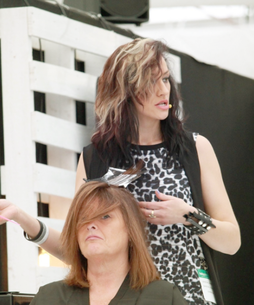
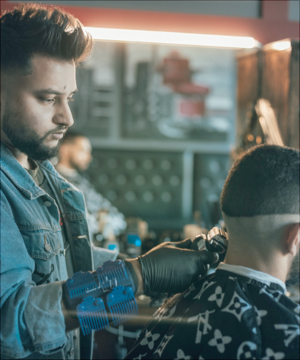
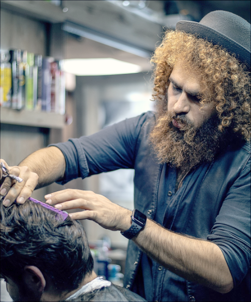

は～い、スタイリスト兼このお店のオーナーのマリアよ、よろしくね。
趣味はトレーニングとヨガよ。アクティブな性格が高じてこの前チベットまで行ってヨガの修行をしてきたわ。山頂の寺院を訪ねるのに3日かかって大変だったけどそんなのへっちゃら（笑）。やっぱりヨガを教えてくれる先生ってイメージ通りおひげが長くて仙人みたいだったわ（笑）。私も熱を入れて修行してたせいかしら、修行を終えるころにはひげが生え始めていてびっくりしたわ（笑）。でも大丈夫、ひげが生えていても腕は確かよ。自信があるの！

スタイリストのボブだよろしく。
最近はネットゲームに熱中しているよ。趣味はスケボーで、一緒に走りながらボードの上で仲間の髪を切ったこともあるぜ！クレイジーだろ？でも感じたよ、俺はいついかなる時もスタイリストなんだってな（笑）。

やあ、ジョーイだよろしく。
趣味は忍術の修行だ。忍術は実に興味深い。なぜなら色々な技があるからね。今は影分身の術を練習してるんだ。この技が習得出来たら、君の髪を切るのもあっという間さ。ハサミを使うのもお手の物、なんせ忍術では小太刀を扱う修行もしているからね。髪だけでなく日頃のうっぷんも切り裂いて心身ともにスッキリ生まれ変わらせてみせるよ。